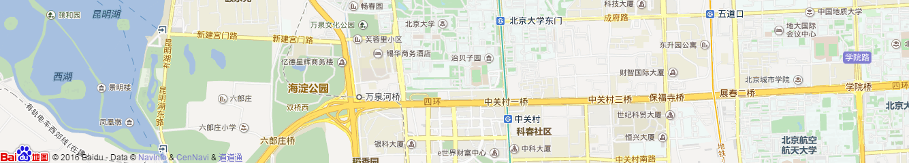

<!DOCTYPE html>
<html>

<head>
	<meta charset="UTF-8">
	<title>选择所在坐标</title>
	<meta content="telephone=no" name="format-detection">
	<meta content="width=device-width, initial-scale=1.0, maximum-scale=1.0, user-scalable=no" name="viewport">
	<meta content="yes" name="apple-mobile-web-app-capable">
	<meta content="black" name="apple-mobile-web-app-status-bar-style">
	<meta content="on" http-equiv="cleartype">
	<!--build:css inline  -->
	<link rel="stylesheet" type="text/css" href="assets/css/1reset.css" />
	<link rel="stylesheet" type="text/css" href="assets/css/2layout.css" />
	<link rel="stylesheet" type="text/css" href="assets/css/common.css" />
	<!-- /build -->
	<style>
		.cc_main {
			width: 100%;
			height: 100%;
		}

		.cc_input {
			width: 97%;
			margin: 10px auto;
			background: #fff;
			overflow: hidden;
			height: 2.81rem;
			line-height: 2.81rem;
			padding-left: 10px;
		}

		.cc_search {
			height: 2.81rem;
			line-height: 2.81rem;
			margin: 10px 0;
		}

		.cc_search em {
			width: 1.38rem;
			height: 1.38rem;
			margin: 2px 0;
			display: inline-block;
			background: url(assets/images/lp_search.png) no-repeat;
			background-size: 100%;
		}

		.cc_input input {
			height: 2rem;
			border: none;
			width: 63%;
			margin-left: 10px;
		}

		.cc_btn {
			background: #eb3c3c;
			color: #fff;
			width: 19%;
			text-align: center;
			font-size: 1.06rem;
		}

		.cc_map {
			width: 100%;
			height: 15.19rem;
			background: #fff;
			overflow: hidden;
		}

		.cc_maplist {
			width: 97%;
			margin: 10px auto;
			background: #fff;
		}

		.cc_maplist li {
			overflow: hidden;
		}

		.cc_maplist li p:nth-child(1) {
			width: 20%;
			border-right: 1px solid #f0f0f0;
		}

		.cc_maplist li p:nth-child(2) {
			padding-left: 10px;
		}

		.cc_maplist li p {
			/*display: table-cell;
            vertical-align: middle;*/
			text-align: center;
		}

		.cc_maplist li p em {
			width: 0.625rem;
			height: 1rem;
			display: inline-block;
			background: url(assets/images/ana_search.png) no-repeat;
			background-size: 100%;
		}

		.cc_maplist li {
			line-height: 2.75rem;
			border-bottom: 1px solid #f0f0f0;
		}

		.cc_main_map {
			position: relative;
		}

		.cc_icon {
			width: 1.83rem;   /*2.69rem*/
			height: 3rem;  /*3.625rem*/
			position: absolute;
			top: 24%;
			left: 50%;
			margin-left: -1.23rem;
		}

		.cc_icon img {
			width: 100%;
		}
	</style>
</head>

<body ng-app="mapApp" ng-controller="MapController">
<div class="cc_main">
	<div class="cc_main_map">
		<div class="cc_map" id="myMap">
			<!---->
		</div>
		<div class="cc_icon">
			
		</div>
	</div>

	<div class="cc_maplist">
		<ul id="cc_searchAddrListData">
			<li class="lp_searchLi" ng-repeat="addr in addrArr track by $index" ng-click="selectAddr(addr)">
				<p class="fl">
					<em></em>
				</p>
				<p class="fl">
					<a href="#" ng-bind="addr.name"></a>
				</p>
			</li>
		</ul>
	</div>
</div>
<script type="text/javascript" src="http://api.map.baidu.com/api?v=2.0&ak=pBZ1pAlmftcQrQleqITRKqi6UrewIuNe"></script>
<script type="text/javascript" src="./assets/js/angular.js"></script>
<script type="text/javascript">
    angular.module("mapApp",[])
            .controller("MapController", function ($scope,$http) {
                // 创建Map实例
                var map = new BMap.Map("myMap");
				var locaAddr = sessionStorage.getItem("_location_address_");
                locaAddr = JSON.parse(locaAddr);
                var point = new BMap.Point(locaAddr.lng, locaAddr.lat);  // 创建点坐标
                map.centerAndZoom(point, 15);                 // 初始化地图，设置中心点坐标和地图级别
                /*地图拖拽事件*/
                map.addEventListener("dragend",showList);
                //监视缩放完成事件
                map.addEventListener("zoomend",showList);

                function showList() {
                    //得到中心点的坐标
                    var center = map.getCenter();
                    //ajax请求得到附近地址列表/*通过中心点坐标获取周边的地址信息*/
                    var url = 'http://api.map.baidu.com/geocoder/v2/?ak=pBZ1pAlmftcQrQleqITRKqi6UrewIuNe' +
                            '&callback=JSON_CALLBACK&location=' + center.lat + ',' + center.lng + '&output=json&pois=1';
                    $http.jsonp(url)
                            .success(function (data) {
                                $scope.addrArr = [];
                                /*得到移动地图的对象信息*/
                                var result = data.result;
                                console.log(result);
                                /*当前地址信息*/
//                                console.log(result.formatted_address);
                                /*周边地址信息*/
                                result.pois.forEach(function (addr) {
                                    $scope.addrArr.push({
                                        name : addr.addr,
                                        lat : addr.point.y,
                                        lng : addr.point.x,
                                        cityId : result.cityCode
                                    });
                                });
//                                console.log($scope.addrArr[1].address);

                            })
                }
                showList();

                /*选择地址*/
                $scope.selectAddr = function (addr) {
                    sessionStorage.setItem("_sele_address_", JSON.stringify(addr));
                    var userAddr = sessionStorage.getItem("_user_address_");
                    if(userAddr==null){
                        /*所以没有用户保存的地址信息*/
                        window.location = "index.html";
						var selAddr = sessionStorage.getItem("_sele_address_");
                        console.log(selAddr);
//                        selAddr = JSON.parse(selAddr);
//                        selAddr.name = selAddr.address;
						sessionStorage.setItem("_location_address_",selAddr);
						console.log("=========");
                    }else{
                        /*每次进入地图后在Session中保存了地址信息，返回显示之后删除*/
                        window.location = "addNewAddr.html";
                    }

                }

            })
</script>
</body>
</html>